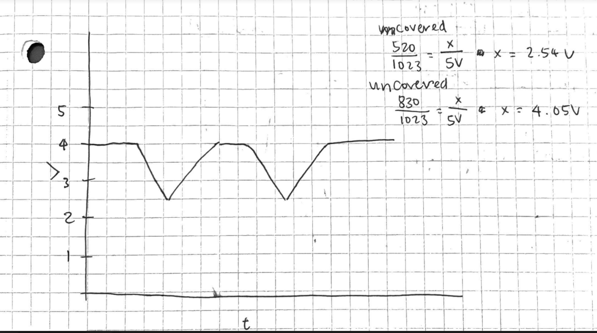

In my code, I first set up variables to make changing pins easier if needed,
initialized the pins to Outputs and Inputs as needed, and started the serial monitor.
Within the loop, I read the value from the sensing pin and contstrained and mapped it
to appropriate values for the LEDs to use. It was constrained to 520 and 830 instead of 0
and 1023 because those are the min and max values that were being read when tested in a
fairly lit room. If I had used 0 and 1023, the LEDs would not turn all the way on or off.
Finally, I turned on the LEDs based on this
number and wrote to the serial what the brightness number was, as well as whether each
LED was bright or not.
1: In your voltage divider, can the variable resistor be either R1 or R2 or does
it need to be one or the other? Justify your answer with example calculations.
Yes, in my schematic, the variable resistor is currently R1, but changing it to R2 will
still work. However, I might need to change to code as it changes the voltage that the
sensor reads.
Example: In a lit room, the LDR = about 6k Ohms
Vout = Vin (R2/(R1+R2))
If photoresistor is R1:
5V (10k/(16k)) = 3.125 V
If photoresistor is R2:
5V (6k/16k) = 1.875 V
2: Draw a graph where the x-axis is time and the y-axis is voltage. Plot the voltage
at V-measure of your voltage divider of your shared gif.

3: AnalogWrite and analogRead are respectively 8-bit and 10-bit values. Imagine
you had 10-bit PWM and a 16-bit analog-to-digital converter instead. How would this
change your map() code? Explain your answer.
You would need to map the 16 bit values (max number being 65535) to
10 bit values (max being 1023).
The code would now be int outputValue = map(value, 0, 65535, 0, 1023); although I might have to constrain
the exact numbers so that my LEDs turn all the way off.